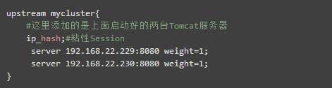
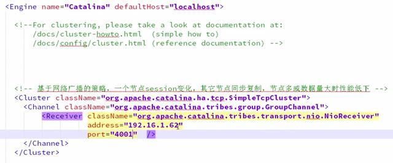
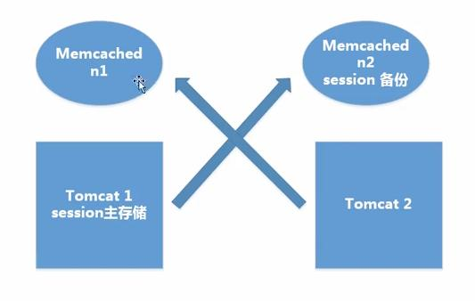
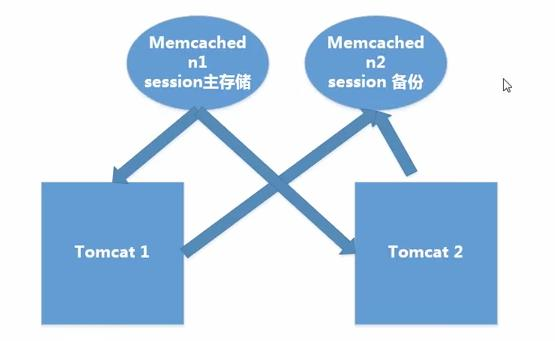
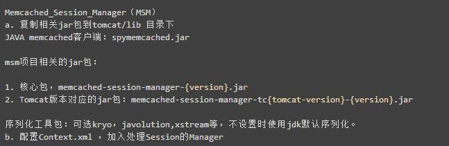
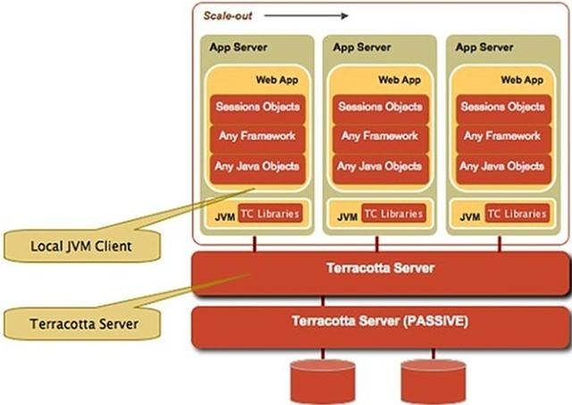

分布式环境下5种session处理策略
本文于378天之前发表，文中内容可能已经过时。
前言
在搭建完集群环境后，不得不考虑的一个问题就是用户访问产生的session如何处理。如果不做任何处理的话，用户将出现频繁登录的现象，比如集群中存在A、B两台服务器，用户在第一次访问网站时，Nginx通过其负载均衡机制将用户请求转发到A服务器，这时A服务器就会给用户创建一个Session。当用户第二次发送请求时，Nginx将其负载均衡到B服务器，而这时候B服务器并不存在Session，所以就会将用户踢到登录页面。这将大大降低用户体验度，导致用户的流失，这种情况是项目绝不应该出现的。
我们应当对产生的Session进行处理，通过粘性Session，Session复制或Session共享等方式保证用户的体验度。
以下我将说明5种Session处理策略，并分析其优劣性。
第一种：粘性session
原理：粘性Session是指将用户锁定到某一个服务器上，比如上面说的例子，用户第一次请求时，负载均衡器将用户的请求转发到了A服务器上，如果负载均衡器设置了粘性Session的话，那么用户以后的每次请求都会转发到A服务器上，相当于把用户和A服务器粘到了一块，这就是粘性Session机制。 优点：简单，不需要对session做任何处理。 缺点：缺乏容错性，如果当前访问的服务器发生故障，用户被转移到第二个服务器上时，他的session信息都将失效。 适用场景：发生故障对客户产生的影响较小；服务器发生故障是低概率事件。 实现方式：以Nginx为例，在upstream模块配置ip_hash属性即可实现粘性Session。

第二种：服务器session复制
原理：任何一个服务器上的session发生改变（增删改），该节点会把这个 session的所有内容序列化，然后广播给所有其它节点，不管其他服务器需不需要session，以此来保证Session同步。 优点：可容错，各个服务器间session能够实时响应。 缺点：会对网络负荷造成一定压力，如果session量大的话可能会造成网络堵塞，拖慢服务器性能。 实现方式： ① 设置tomcat ，server.xml 开启tomcat集群功能

Address:填写本机ip即可，设置端口号，预防端口冲突。 ② 在应用里增加信息：通知应用当前处于集群环境中，支持分布式 在web.xml中添加选项 <distributable/>
第三种：session共享机制
使用分布式缓存方案比如memcached、Redis，但是要求Memcached或Redis必须是集群。 使用Session共享也分两种机制，两种情况如下：
粘性session处理方式
原理：不同的 tomcat指定访问不同的主memcached。多个Memcached之间信息是同步的，能主从备份和高可用。用户访问时首先在tomcat中创建session，然后将session复制一份放到它对应的memcahed上。memcache只起备份作用，读写都在tomcat上。当某一个tomcat挂掉后，集群将用户的访问定位到备tomcat上，然后根据cookie中存储的SessionId找session，找不到时，再去相应的memcached上去session，找到之后将其复制到备tomcat上。

非粘性session处理方式
原理：memcached做主从复制，写入session都往从memcached服务上写，读取都从主memcached读取，tomcat本身不存储session
优点：可容错，session实时响应。 实现方式：用开源的msm插件解决tomcat之间的session共享：

粘性模式配置：
这里写图片描述 非粘性配置： 这里写图片描述
第四种：session持久化到数据库
原理：就不用多说了吧，拿出一个数据库，专门用来存储session信息。保证session的持久化。 优点：服务器出现问题，session不会丢失 缺点：如果网站的访问量很大，把session存储到数据库中，会对数据库造成很大压力，还需要增加额外的开销维护数据库。
第五种terracotta实现session复制
原理：Terracotta的基本原理是对于集群间共享的数据，当在一个节点发生变化的时候，Terracotta只把变化的部分发送给Terracotta服务器，然后由服务器把它转发给真正需要这个数据的节点。可以看成是对第二种方案的优化。

优点：这样对网络的压力就非常小，各个节点也不必浪费CPU时间和内存进行大量的序列化操作。把这种集群间数据共享的机制应用在session同步上，既避免了对数据库的依赖，又能达到负载均衡和灾难恢复的效果。
小结
以上讲述的就是集群或分布式环境下，session的5种处理策略。其中就应用广泛性而言，第三种方式，也就是基于第三方缓存框架共享session，应用的最为广泛，无论是效率还是扩展性都很好。而Terracotta作为一个JVM级的开源群集框架，不仅提供HTTP Session复制，它还能做分布式缓存，POJO群集，跨越群集的JVM来实现分布式应用程序协调等，也值得学习一下。
赏
 支付宝打赏
支付宝打赏
 微信打赏
微信打赏
支付宝打赏
微信打赏
如果文章对你有帮助，欢迎点击上方按钮打赏作者